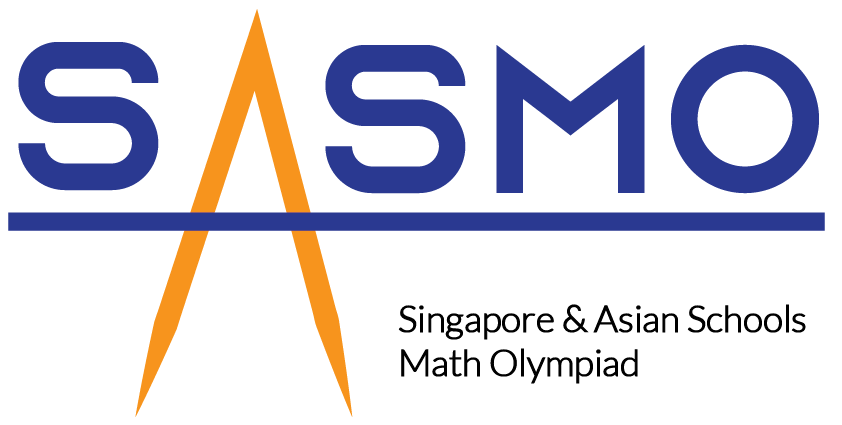

2019
Ace Of Coders


Ace of Coders is a competition where we code a program to defeat other
opponents in a fantasy gaming environment, CodeCombat.
It was a rush of excitement when we see the program we have set up
defeating other teams.
My team managed to clinch 3rd Place.
Singapore and Asian Schools Mathematical Olympiad

SASMO is a Math Olympiad Competition with challenging questions. It
helped me to develop my critical and creative thinking skills to solve
the problems. I managed to acheive the Bronze Award.
Australian Mathematics Competition

AMC was a moderately challenging Math Olympiad Competition with a
variety of questions which tackle fundemental math understanding on a
deeper level. I managed to acheive the Merit Award.
2021
Computational And Algorithmic Thinking 2021
CAT featured questions which required particpants to anaylse and
visualise and craft solutions to the problems. I managed to achieve a
Bronze Award.
National Software Competition
NSC was had 2 segments: an individual quiz to test on basic knowledge
of Python, a Capture-The-Flag competiton where particpants worked in
designated teams to solve questions to earn points for their team. The
event was very fruitful as I was able to meet new people from
different schools. I clinched a Gold Award for the individual quiz and
12th Place for the CTF competition
Design Thinking with Robitics and Computational Thinking
DrCT allowed particpants to cultivate their creativity, logical
reasoning ability, algorithmic and computational thinking skills to
solve problems. I managed to achieve a Merit Award.

Microsoft Imagine Cup Junior
Microsoft Imagine Cup Junior allows students to innovate and find
solutions to real-world problems using technology and artificial
intelligence (AI). As a team, we had to craft out a solution and a
presentation regarding the workings behind our solution. We achieved a
Participation Award.
CSA-Cisco Youth Cyber Challenge 2021
CSA-Cisco Youth Cyber Challenge was a Capture-The-Flag competition
which features questions about Open Source Intelligence (OSINT),
Encryption and Decryption and Flags hidden in webpages. This
competiton was very fun as it felt like a scaveneger hunt quest to
find the different flags online. I achieved a Participation Award.
42nd International C. B. Paul Science Quiz
C. B. Paul Science Quiz is a test with questions on Biology, Physics,
Chemistry and Computing. I achieved a Bronze Award.
2022
SCGC Model United Nations
SCGC MUN was a fun experience, allowing me to research about world
issues such as Accessibility to Education. The experience taught me to
write a position paper and the proceedings in United Nations
Conferences. It also allowed me to gain new friendships from people in
different schools and countries. I achieved Participation Award
The International Math Modelling Challenge
-
S4 Computing Coursework
*writeup here*
SUTD-SST Big D Camp


SUTD-SST Big D Camp was a three-day program where students are
designated into teams and have to work together to create a prototype
of an innovation to improve society. On the first day, we were taught
about Design in Ethics and Sustainability in Design, allowing us to
consider multiple perspectives when designing the prototype. We also
learnt how to use the 3D Printer and the Laser Cutter to create
objects for our prototype. On the second day, we worked on the
prototype. Our prototype was a mass balance with an LCD screen used to
find the amount of stock left in the shelf. It also came with an app
for customers to find out the stock. I was in charge of using an
Arduino to communicate with an online database AdaFruit.IO to be sent
to an iOS Application in an Xcode Project. On the third day, we had to
present how the prototype works, the design considerations and target
audiences to professors from SUTD. Our team managed to achieve the
Design Excellence Award for excellence in prototype and presentation.